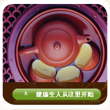

联系我们
地址：云南昆明市官渡区东郊路117号
邮编：650041
电话：400-648-5980
Email:cnkingnuo@gmail.com

网站公告
一、云南昆明德利华保健茶股份有限公司（www.yndlh.cn）上刊载的所有内容，未经本公司或相关权利人书面确认，禁止任何第三方使用。任何第三方将所有内容用于非商业用途、非盈利、非广告目的而纯作个人欣赏使用，应严格遵守《中华人民共和国著作权法》以及其他相关法律、法规的规定。任何第三方将云南昆明德利华保健茶股份有限公司（www.yndlh.cn）提供的任何内容用于商业、盈利、广告性目的时，需征得云南昆明德利华保健茶股份有限公司的书面特别授权，并注明“云南昆明德利华保健茶股份有限公司授权”，并须按国际公约和中华人民共和国法律向本网站或相关权利人支付报酬且注明出处，且使用不得超过本网站刊登、转载该作品的范围。
二、相关权利人声明或者本网站受相关权利人授权声明不得转载、摘编其作品的，任何人不得擅自转载、摘编，否则必须承担一切法律后果。
三、未经云南昆明德利华保健茶股份有限公司的书面特别授权，任何第三方不得变更、发行、播送、转载、复制、重制、改动、散布、表演、展示或利用云南昆明德利华保健茶股份有限公司（www.yndlh.cn）提供的任何内容，否则以侵权论，云南昆明德利华保健茶股份有限公司将依法追究其法律责任直至侵权活动终止。
免责条款 一、本网站严格遵守中华人民共和国有关版权保护的各项法律法规，尊重相关权利人的权利，但对经过审查仍未能发现的由合作伙伴所提供的节目内容的版权瑕疵所引起的侵权，本网站该不负责，亦不承担任何法律责任。 二、本网站对网民上载的数字化作品著作权归属不负事先审查义务；上载人应当在确信自己没有侵害他人著作权的前提之下，向云南昆明德利华保健茶股份有限公司（www.yndlh.cn）上载数字化作品，否则应当自行承担有关法律责任。 三、本网站的链接服务可以直接进入其他站点，这些链接的站点不受云南昆明德利华保健茶股份有限公司（www.yndlh.cn）控制，对任何与本站链接网站的内容不负责任。 四、云南昆明德利华保健茶股份有限公司（www.yndlh.cn），适用中华人民共和国法律。我们保留随时更改我们的网站和上述免责及条款的权利。 其它事项 任何用户使用本网站服务的行为将被视为对本声明全部内容的认可。 如若权利人有任何版权投诉方面的问题，请及时联系我们。